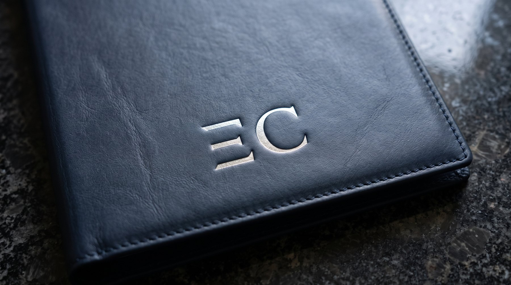

About Euclidean Capital
Euclidean Capital was established organically in 2023 with a singularly focused institutional premise: to build an agile, unencumbered investment house deliberately liberated from the bureaucratic inertia, asset-gathering incentives, and structural conflicts endemic to legacy financial institutions.
As an independent, black-owned South African asset manager, our fiduciary architecture is engineered around operational agility, intellectual independence, and structural integrity. Free from distributed consensus committees, we execute high-conviction mandates where mathematical rigor and fundamental valuation precede capital deployment.
euclidean capital
/juːˈklɪi.dən ˈkæp.ɪ.təl/ · noun
Finance · Active asset management
“Named after Euclid, the ancient Greek mathematician known as the ‘Father of Geometry’, whose principles of logic, structure and reasoning continue to shape modern science and thought. Euclidean Capital — investment philosophy and research methodology.”
Structured thinking · Active management · Enduring value

Two disciplines, one method
Our sustainable alpha thesis emerges from the explicit synthesis of two distinct operational disciplines: top-down sovereign macroeconomic intelligence and bottom-up institutional asset stewardship. By integrating institutional portfolio execution tested on R200bn+ mandates with sovereign risk forensic analysis, Euclidean Capital systematically isolates structural market anomalies.
In Sub-Saharan African capital markets, policy shifts, currency shocks and sovereign fiscal stress are not externalities — they are fundamental valuation drivers. Our converged methodology prices macro volatility into asset cash flows before consensus realises structural dislocations.
The partners behind the desk
“Structured thinking. Active management. Enduring value.”
Sibo Khumalo
Chief Executive Officer & Chief Investment Officer

Langa Malimela
Chief Research Officer & Executive Director
Bryan Shuping
Executive Chairman